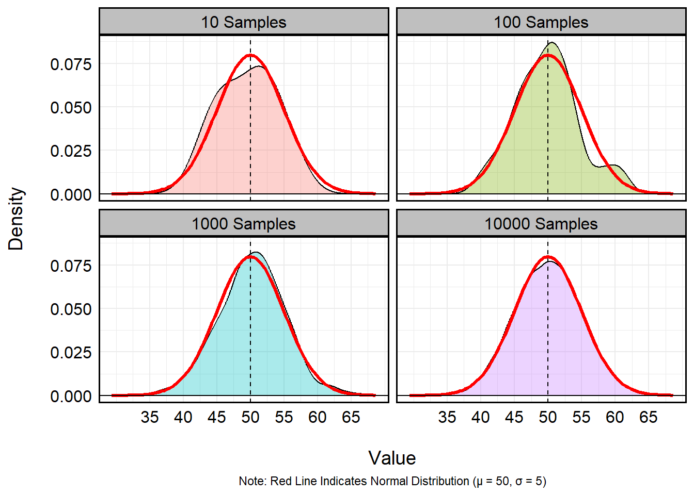

R provides remarkable flexibility for randomly
generating integers across a variety of distributions. Assuming I want
to generate 1000 values at random, I can use many of R’s
built-in functionality to do so:
set.seed(1234) # Random Seed
uniform <- runif(1000, min = 0, max = 10) # Uniform Distribution
summary(uniform)## Min. 1st Qu. Median Mean 3rd Qu. Max.
## 0.003418 2.581589 5.101924 5.072735 7.584385 9.993030normal <- rnorm(1000, mean = 0, sd = 1) # Standard Normal (Mean = 0, SD = 1)
summary(normal)## Min. 1st Qu. Median Mean 3rd Qu. Max.
## -2.930482 -0.632234 0.004943 -0.011677 0.621630 2.705775exponential <- rexp(1000, rate = 1) # Exponential Distribution (Rate = 1)
summary(exponential)## Min. 1st Qu. Median Mean 3rd Qu. Max.
## 0.001928 0.289260 0.696139 1.019630 1.367232 7.461648poisson <- rpois(1000, lambda = 3) # Poisson Distribution (Count)
summary(poisson)## Min. 1st Qu. Median Mean 3rd Qu. Max.
## 0.000 2.000 3.000 2.988 4.000 10.000binomial <- rbinom(1000, size = 10, prob = 0.5) # Bernoulli Distribution
summary(binomial)## Min. 1st Qu. Median Mean 3rd Qu. Max.
## 1.000 4.000 5.000 5.028 6.000 9.000geometric <- rgeom(1000, prob = 0.3) # Geometric Distribution
summary(geometric)## Min. 1st Qu. Median Mean 3rd Qu. Max.
## 0.00 0.00 1.00 2.25 3.00 17.00negative_binomial <- rnbinom(1000, size = 5, prob = 0.4) # Negative Binomial
summary(negative_binomial)## Min. 1st Qu. Median Mean 3rd Qu. Max.
## 0.000 4.000 7.000 7.665 10.000 30.000chi_sq <- rchisq(1000, df = 4) # Chi-Square Distribution (4 Degrees of Freedom)
summary(chi_sq)## Min. 1st Qu. Median Mean 3rd Qu. Max.
## 0.1051 2.0353 3.3665 3.9717 5.0553 21.2402students_t <- rt(1000, df = 5) # Students T (5 DF)
summary(students_t)## Min. 1st Qu. Median Mean 3rd Qu. Max.
## -5.539075 -0.723940 0.017377 -0.006287 0.678332 5.884219 Note: In R, random number generation isn’t truly
random. Rather, they’re pseudo-random, meaning they use a deterministic
algorithm to produce a sequence of numbers that appear random. A
seed is the starting point for that algorithm. When you
call set.seed(1234), you are initializing the random number
generator with a specific value. This ensures that every time you use
the same seed, the sequence of “random” numbers R produces
will be exactly the same – perfect for reproducibility!
In R, a for loop is a control structure used to repeat a block of
code a fixed number of times, iterating over a sequence of values. The
basic syntax is for(variable in sequence) { code }, where
variable takes on each value in sequence one at a time, and
the code inside the curly braces executes for each iteration.
for loops are useful when you need to perform repetitive
tasks, such as computing multiple summaries, filling a vector, or
generating plots for several datasets. For example, imagine I wanted to
print the squared integer of every value between 1 and 5. Rather than
individually entering {value}^5 to the console, I could
simply iterate for each value:
for (i in 1:5){
print(i^2)
}## [1] 1
## [1] 4
## [1] 9
## [1] 16
## [1] 25The syntax of these loops are fairly straightforward.Here,
i takes on the value associated with each iteration. During
the first pass, it will assume the value of 1. On the second pass, it
will assume the value 2 – so on and so forth until it reaches the
terminal value of 5.
R is able to assume various syntax for assuming ranges
of alphanumeric values. Here’s just a few examples:
values <- seq(10, 100, by = 10) # Values 10 to 100 by 10
print(values)## [1] 10 20 30 40 50 60 70 80 90 100values <- c(10:20) # Values 10 to 20 (Inclusive)
print(values)## [1] 10 11 12 13 14 15 16 17 18 19 20values <- seq(1, 100, by = 1) # All Values 1 to 100 (Inclusive)
for (i in values){
if (i %% 10 == 0){
print(i)
}
} # For Each Value in `values', if i is neatly divisible by 10, print i## [1] 10
## [1] 20
## [1] 30
## [1] 40
## [1] 50
## [1] 60
## [1] 70
## [1] 80
## [1] 90
## [1] 100values <- c('a', 'b', 'c', 'd', 'f')
for (i in 1:length(values)){
print(values[i])
} # For Each Value in Values, Print the Value Indexed values[i]## [1] "a"
## [1] "b"
## [1] "c"
## [1] "d"
## [1] "f"I could even bake the syntax of for loops into random
number generation to significantly increase my efficiency in modeling
distributions. Let’s imagine I want to visualize the capacity for
repeated sampling to best mimic a standard normal distribution where
\(\mu\) = 50 and \(\sigma\) = 5. Using a for
loop, I can cycle different sampling rates to answer this question:
results <- data.frame() # Empty Dataframe to Store Output
samples <- c(10, 100, 1000, 10000) # Vector of Integers
for (i in 1:length(samples)){
temp_sample_size <- samples[i] # Recovers the i-th value of the samples vector
temp_run <- rnorm(temp_sample_size, mean = 50, sd = 5) # Run
temp_run <- data.frame(sample_size = temp_sample_size,
value = temp_run) # Create Temporary 2 x i dataframe indicating size of samples and values from rbinom()
results <- bind_rows(results, temp_run) # Export to 'results' data.frame
}
summary(results) # Print Summary## sample_size value
## Min. : 10 Min. :29.37
## 1st Qu.:10000 1st Qu.:46.55
## Median :10000 Median :50.00
## Mean : 9092 Mean :49.98
## 3rd Qu.:10000 3rd Qu.:53.36
## Max. :10000 Max. :68.64results %>%
mutate(sample_size = factor(sample_size)) %>%
ggplot(aes(x = value)) +
geom_density(aes(fill = sample_size), alpha = 1/3) +
stat_function(fun = dnorm, args = list(mean = 50, sd = 5),
color = "red", linewidth = 1.2) +
labs(x = '\nValue',
y = 'Density\n',
fill = 'Sample Size',
caption = 'Note: Red Line Indicates Normal Distribution (μ = 50, σ = 5)') +
geom_hline(yintercept = 0) +
geom_vline(xintercept = 50, linetype = 2) +
facet_wrap(~paste0(sample_size, ' Samples')) +
scale_x_continuous(breaks = seq(35, 65, 5)) +
theme_minimal() +
theme(panel.border = element_rect(linewidth = 1, colour = 'black', fill = NA),
axis.text = element_text(size = 12, colour = 'black'),
axis.title = element_text(size = 14, colour = 'black'),
strip.background = element_rect(linewidth = 1, colour = 'black', fill = 'grey75'),
strip.text = element_text(size = 12, colour = 'black'),
legend.position = 'none',
plot.caption = element_text(hjust = 0.5)) 